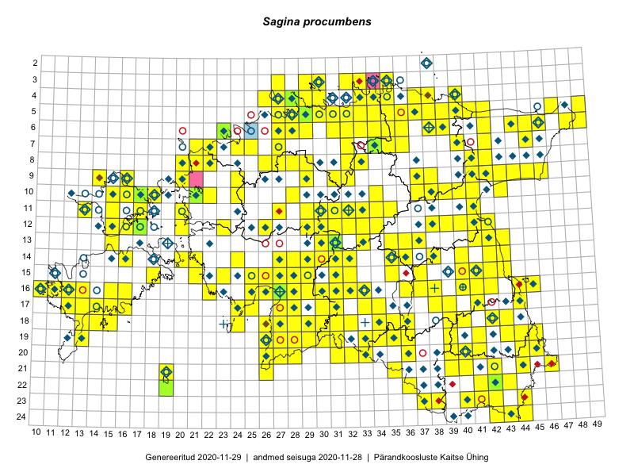

Sagina procumbens
Uuendatud: 2016-12-02
Kaardile koondatud taksonid: Sagina procumbens L.

Kaart põhineb 297 kirjel, neist vaatlusi 296 ja eksemplare 1. Taksonit on leitud 226 ruudust.
Kuvatud viited 20 esimesele andmebaasikirjele, ülejäänud PlutoFis
- Malle Leht: 2015-07-09: : ala
- Peedu Saar, Timo Luhamäe: 2015-05-10: 12-32: ala
- Peedu Saar, Timo Luhamäe: 2015-05-12: 07-35: ala
- Peedu Saar, Liina Oja: 2015-05-22: 19-30: ala
- Peedu Saar, Liina Oja: 2015-05-22: 19-29: ala
- Thea Kull: 2015-07-07: 16-40: ala
- Rein Kalamees: 2015-06-08: 05-32: ala
- Peedu Saar, Liina Oja: 2015-05-20: 18-28: ala
- Peedu Saar, Toomas Kukk: 2015-05-28: 11-17: ala
- Peedu Saar, Toomas Kukk: 2015-05-28: 10-15: ala
- Peedu Saar, Toomas Kukk: 2015-05-27: 09-16: ala
- Toomas Kukk, Eerik Leibak: 2015-08-10: 09-14: ala
- Peedu Saar, Ott Luuk: 2015-06-21: 14-42: ala
- Ott Luuk, Peedu Saar: 2015-07-27: 11-35: ala
- Ott Luuk, Peedu Saar: 2015-08-13: 24-43: ala
- Ott Luuk, Toomas Kukk, Thea Kull, Peedu Saar, Timo Luhamäe: 2015-06-25: 10-28: ala
- Tiit Hallikma, Toomas Kukk: 2015-07-22: 05-49: ala
- Peedu Saar, Eerik Leibak: 2015-07-30: 16-41: ala
- Peedu Saar, Liina Oja: 2015-06-09: 17-28: ala
- Peedu Saar, Liina Oja: 2015-06-11: 16-29: ala